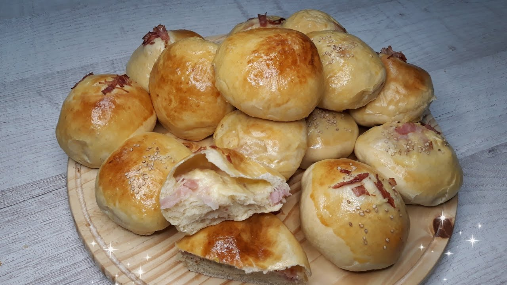

Pam relleno con queso y panceta:

Ingredientes
- 100 ml de agua
- 370 gr de harina
- 45 gr de azúcar
- 1 cdita de sal
- 10 gr de leche en polvo
- 15 gr de levadura fresca de panadero (o 5 gr de levadura seca)
- 30 gr mantequilla pomada
- 1 huevo
- 110 ml de leche
- 3 lonchas de queso raclette (u otro)
- 3 lonchas de panceta
- 1 yema de huevo
Pasos:
Descripción de los pasos para preparar el Pan relleno
- (1)Mezcla los ingredientes secos en un bol grande, combinar la harina, la sal y la levadura.
- (2)Agregar el agua tibia en la mezcla y mezcla hasta que se forme una masa.
- (3)Sacar la masa del bol y amásala sobre una superficie enharinada durante unos 10 minutos (hasta que este suave y elastica)
- (4)Colocar la masa en un bol engrasado, cúbrelo con un paño y deja que repose en un lugar cálido durante 1 o 2 horas, o hasta que doble su tamaño.
- (5)Darle la forma deseada a la masa(barra, hogaza, etc.) y rellenarlo con el queso y la panceta
- (6)Dejar que la masa formada repose durante 30-60 minutos.
- (7)Mientras la masa reposa, precalentar el horno a 220°C.
- (8)Colocar el pan en el horno y hornear durante 25-30 minutos, o hasta que esté dorado y suene hueco al golpearlo en la base.
- (9)Retirar el pan del horno y déjalo enfriar sobre una rejilla antes de cortarlo.
Volver a la página principal